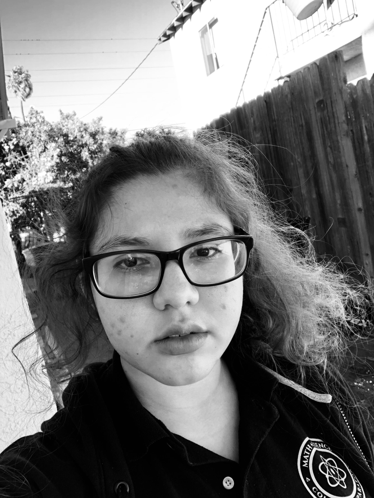

HOME
FUN PAGE
RESUME
A few blank messages
ABOUTME

Ashly Martinez
This is Ashly Martinez and I will be telling you something's about me. When I am older I would like to be a Research psychologist. I will most likely
end up switching my school pathway to biomedical because of this, since it's related to my major the most out of all the options. Biomedical is actually
my least favorite pathway but I will work hard so that I could succeed in my future major. I chose this career because the way people think and the way
the mind works was always interesting to me. I believe that I would work better conducting research and asking people questions rather than counseling and
working with the emotional situations of others. I have always had the dream of becoming a doctor but thought that it was too much work and
school just to do check ups on people so I felt that being a Research Psychologist would tie the two together.
I was always a person that would ask more than what was taught. Most of the time I was never satisfied with what we were being taught since I always had so many
questions, but was to shy to ask them. When I was in first grade, in the mornings I would go to tutoring with my dad even though I did not need it. I loved school
and was an extroverted kid that loved making new friends and talking. In the second grade I was behind on math, but I tried hard and went to tutoring and know
I am taking an advanced math class. It is only my freshman year so I do not have many accomplishments but I did get awards for my outstanding performance in the
second benchmarks. I also got to take an extra math class because of the performance on the first and my work in Integrated math one. Taking the second class was
nerve wracking for me because I was behind on all the work and I did not know if I was going to succeed. I went to tutoring and got worksheets from my teacher so
I could catch up. Thankfully I ended up passing the class in the first semester with an A. I have learned through this experience is that if I put in the work
for something, and actually cared the slightest than I could do wonderful things.
In conclusion, I believe that I am a hardworking student that thrives to learn, and tries to overcome the need to procrastinate but sometimes fails. I will
hopefully be majoring in psychology when I go to college and would accomplish my goal to work in a hospital. Thank you for checking out my about me page and
I would invite you to check out the other pages.